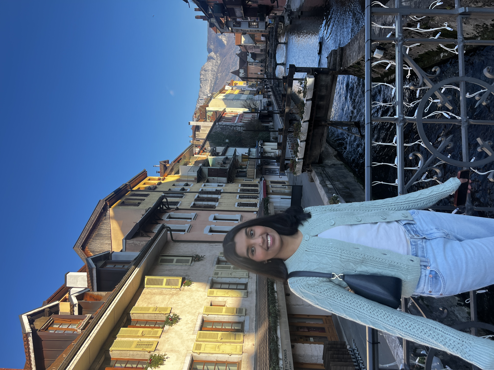

I am a current senior pursuing economics at William & Mary. Through my internships with firms like BlackPearl Global Investments and Evolved Global, I developed hands-on experience in venture capital, conducting due diligence, analyzing financial statements, and contributing to startup growth strategies. This experience taught me the importance of thorough research and analytical rigor in evaluating investments and driving business decisions.
On campus, I’m deeply involved in leadership roles as a Residential Assistant, Presidential Aide, and Undersecretary-General for the William & Mary High School Model UN Conference, where I advocate for inclusivity and community building. I foster a welcoming environment in each role that supports diversity and inspires meaningful connections.
My experience in student leadership has honed my communication and organizational skills, enabling me to manage projects effectively and lead teams toward a shared goal.
I'm passionate about using my analytical and project management skills in consulting, investment banking, and finance/economics. I’m currently exploring consulting and capital markets opportunities and am particularly interested in internships that will allow me to be in a client-centered environment.
View My Resume